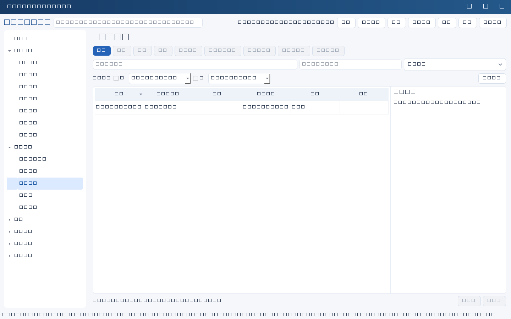
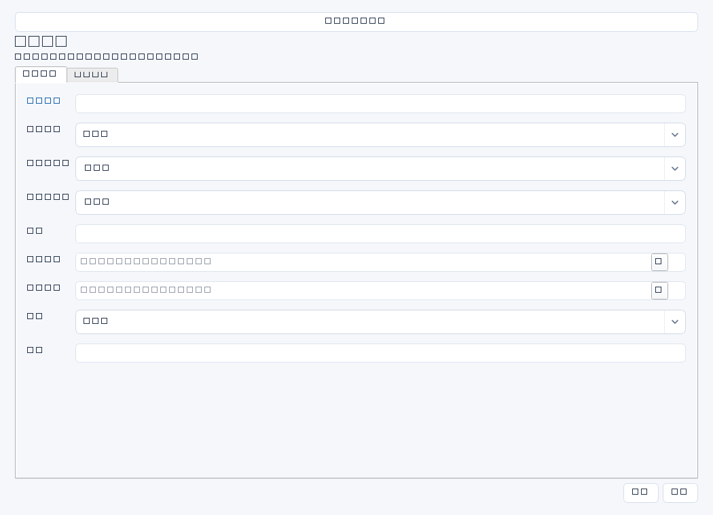

管理从立项、实施到验收和收益复盘的IT项目，把规划转为明确范围、预算和责任分工。输入来自批准的立项材料、业务需求、合同报价和资源安排。


操作步骤与资料获取
- 取得立项审批、需求范围清单和初步报价；先核对项目是否属于已有规划，避免同一建设事项重复立项。
- 新增项目，分别填写业务负责人和项目负责人，明确阶段、时间边界及预算口径；规划ID从实际记录选择。
- 与业务方共同确定验收标准、测试数据和签认方式，再到任务管理拆解交付任务并关联项目；任务不会因项目保存自动产生。
- 定期收集进度、测试结果、风险和费用变化；在本项目记录摘要，详细行动在任务中跟踪，重大取舍留决策记录。
字段逐项说明
| 操作 / 字段 | 详细说明 |
|---|---|
| 名称 | 项目标题，强制非空；建议“ERP异地备份与恢复验证项目”，突出交付物。 |
| 规划ID | 可选关联长期规划；非空时强制引用存在且未归档的plans记录，界面选择显示名称而保存真实ID。 |
| 业务负责人 | 对业务需求和收益确认负责的人；姓名文本或人员候选，不等同项目审批权限。 |
| 项目负责人 | 对交付协调、进度和风险跟踪负责的人；建议与业务负责人职责分开，可填姓名文本。 |
| 阶段 | 填写调研、设计、实施、试运行或验收等实际阶段；自由文本，没有强制阶段迁移顺序。 |
| 开始日期 | 实际约定启动日期；非空时强制YYYY-MM-DD。 |
| 截止日期 | 交付截止日期；非空时强制YYYY-MM-DD，且不得早于已填开始日期。 |
| 状态 | 选择通用进展状态；建议阶段表示所处环节、状态表示是否在推进，勿混为一谈。 |
| 预算 | 批准预算金额；可空，填写时强制非负十进制纯数字，不含元、逗号或公式。本模块无币种字段，建议在风险或收益复盘说明币种与含税口径。 |
| 验收标准 | 按范围列功能、性能、安全、运维移交及业务确认条件；建议写清样本量和证据位置。 |
| 风险 | 记录影响交付的依赖、资源、停机窗口或供应商风险；建议列责任人和应对，必要时另建风险记录。 |
| 收益复盘 | 写上线后业务基线与实测结果、观察周期、偏差原因和业务确认材料；尚未到观察期可写复核安排。 |


示例（仅演示）
| 操作 / 字段 | 详细说明 |
|---|---|
| 名称 | ERP异地备份与恢复验证项目 |
| 规划ID | |
| 业务负责人 | 王芳 |
| 项目负责人 | 李明 |
| 阶段 | 实施 |
| 开始日期 | 2026-04-01 |
| 截止日期 | 2026-06-30 |
| 状态 | 进行中 |
| 预算 | 120000 |
| 验收标准 | 隔离恢复≤4小时；备份点数据缺口≤1小时；财务核对20笔单据通过 |
| 风险 | 预算为人民币含税；异地链路交付有延期风险，陈晨每周向运营商确认 |
| 收益复盘 | 计划2026年7月核对恢复演练报告及人工操作工时 |
形成闭环
- 核对范围、未关闭问题、运维接管、合同交付和财务结算，不只看任务完成数。
- 保存业务验收纪要和测试报告位置，人工更新状态；本模块完成没有强制验收字段门槛。
- 按约定观察期补充收益复盘；示例规划ID留空，实际使用时选择已有规划。
常见误区与边界
- 项目预算只是记录值，不会自动占用财务预算或累计合同金额。
- 把项目负责人姓名视为应用登录账号，或认为填写业务负责人就完成了业务审批。
- 项目结束未做运维交接，或把预计收益写成已经实现的收益。